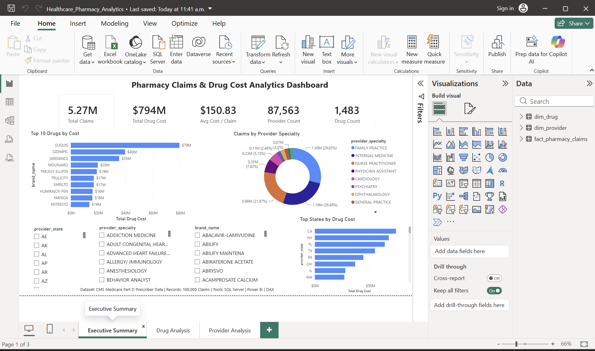

Toronto, ON
Data Analyst and Business Intelligence professional with 6+ years of experience delivering SQL-based analytics, Power BI dashboards, KPI reporting, data validation, and reporting automation across retail and financial services.
Experienced in translating business requirements into actionable insights using Power BI, SQL, DAX, Power Query, Python, and dimensional data modeling. Skilled in stakeholder collaboration, financial reporting, data reconciliation, and automated reporting workflows.
Interactive dashboards, KPI cards, drill-down reports, DAX measures, semantic models, Power Query transformations, RLS/OLS, and paginated reports.
Enterprise BI reporting using SQL Server, T-SQL, SSIS, SSAS, SSRS, stored procedures, ETL workflows, and performance tuning.
Azure-based data workflows, Python report automation, YAML configurations, SQL Server Agent jobs, ADF pipelines, Synapse, Fabric, Snowflake, and PySpark.
Developed pharmacy operational reports using Power BI semantic models and complex DAX measures based on business requirements.
Built Python automation scripts, YAML-driven configurations, and SQL Server Agent jobs to automate report generation, formatting, and delivery.
June 2025 — PresentDesigned Power BI dashboards and paginated reports with advanced DAX, KPIs, drilldowns, conditional formatting, and financial reporting insights.
Developed T-SQL stored procedures, SSIS packages, SSAS models, ADF pipelines, CI/CD workflows, and Power BI security models.
March 2022 — May 2025Built enterprise BI dashboards, optimized SQL queries, and migrated SSRS financial reports into Power BI for finance and operations users.
Created ETL workflows using SSIS and Azure Data Factory and supported semantic models, RLS/OLS, and financial reporting validation.
May 2020 — Feb 2022
Microsoft BI Portfolio Project
Built an end-to-end Healthcare Pharmacy Analytics solution using SQL Server and Power BI.
Designed a Star Schema data model, developed SQL scripts for data loading and KPI calculations, and created interactive dashboards to analyze 5.27M+ claims, 87K providers, and 1,483 drugs.
Delivered insights into drug costs, provider specialties, and state-wise spending using dynamic visualizations and slicers.
I am open to Power BI Developer, BI Developer, SQL Developer, Data Engineer, and Analytics Engineer opportunities.
Email: saisrichandu22@gmail.com
Phone: 647-247-4841
Location: Toronto, ON
GitHub: github.com/saisrichandu22
LinkedIn: LinkedIn